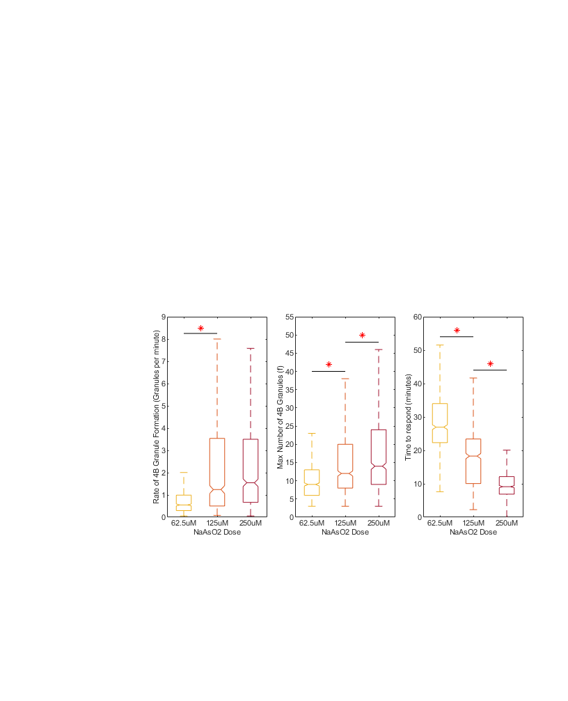

Figure 1 and 2
Do the analysis and make both of these figures.
Contents
- Load the model fit data for the live cell
- 24h induced Wild-Type 4B Data
- 24h induced 139A mutant 4B data
- fit the model to the datasets
- Subset only the good data
- Now plot the data
- Focus on the wt 4b cells for now
- Start with wt 4b cells treated with 125uM NaAsO2 as control vs all other NaAsO2 concentrations
- Make Figure 1 - eIF4B-GFP (WT)
- Figure 2 - RRM of eIF4B suppresses stress granule formation
- Run the statistics comparing the cell lines using wt treated with various concentrations of NaAsO2 as control
- Start with wt 4b cells treated with 62.5uM NaAsO2 as control vs all other NaAsO2 concentrations and btwn cell lines
- Now use wt 4b cells treated with 125uM as control vs all other NaAsO2 concentrations and btwn cell lines
- Now use wt 4b cells treated with 250uM
- Plot the data for Figure 2
Load the model fit data for the live cell
addpath('Z:\code\Nick')
24h induced Wild-Type 4B Data
% 2023-05-03 dataset1 = load('Z:\imageData\SG_4B\2023-05-03 4B-WT 4B-Mut Tet curve NaAsO2 curve\2023-05-03 4B-WT 4B-Mut Tet curve NaAsO2 curve_Processed_Copy.mat'); dataset1 = dataset1.dataloc; % pull the loaded dataloc structure % append the movie's metadata dataset1.movieinfo.PixSizeX = 0.16; % um/px dataset1.movieinfo.PixSizeY = 0.16; % um/px dataset1.movieinfo.PixNumX = 3200; % pixels dataset1.movieinfo.PixNumY = 3200; % pixels dataset1.movieinfo.tsamp = 3; % minutes % 2023-06-15 dataset2 = load('Z:\imageData\SG_4B\2023-06-15 4b WT-Mut NaAso2 Curve\2023-06-15 4b WT-Mut NaAso2 Curve_Processed_Copy.mat'); dataset2 = dataset2.dataloc; % pull the loaded dataloc structure % append the movie's metadata dataset2.movieinfo.PixSizeX = 0.33; % um/px dataset2.movieinfo.PixSizeY = 0.33; % um/px dataset2.movieinfo.PixNumX = 1280; % pixels dataset2.movieinfo.PixNumY = 1080; % pixels dataset2.movieinfo.tsamp = 3; % minutes % 2023-06-29 dataset3 = load('Z:\imageData\SG_4B\2023-06-29 4B WT vs Mut TET curve NaAsO2 curve\2023-06-29 4B WT vs Mut TET curve NaAsO2 curve_Processed_Copy.mat'); dataset3 = dataset3.dataloc; % pull the loaded dataloc structure % append the movie's metadata dataset3.movieinfo.PixSizeX = 0.33; % um/px dataset3.movieinfo.PixSizeY = 0.33; % um/px dataset3.movieinfo.PixNumX = 1600; % pixels dataset3.movieinfo.PixNumY = 1600; % pixels dataset3.movieinfo.tsamp = 3; % minutes % 2023-08-23 %dataset4 = load(''); %dataset4 = dataset5.dataloc; % pull the loaded dataloc structure
24h induced 139A mutant 4B data
% 2023-05-03 (already loaded) % 2023-06-15 (already loaded) % 2023-06-29 (already loaded)
fit the model to the datasets
[fitData2,~] = convertDatalocToModelFit({dataset3,dataset3,dataset3}, 'NumGrans','pulsepars',{'f','td','ts','rate_in_min','min_to_respond','rsquared','livecell','granarea'});
Subset only the good data
fitData = fitData2; % work with duplicated data (for safety) gFitData = fitData((fitData.NumGrans_rsquared > 0.85),:); % look for an r squared greater than 0.8 ? gFitData.cell = strrep(gFitData.cell,'Hela_eIF4BGFP','HeLa_eIF4BGFP'); gFitData.cell = strrep(gFitData.cell,'Hela_eIF4BF139A','HeLa_4B139AGFP');
Now plot the data
Make the fit models datalocDF = makeLiveCellDataframe({dataset1,dataset2,dataset3},'subset','TET100n24t_NaAsO2125u2t');
plotme = {'NumGrans'}; %,'granspercell' plottype = {'albeck mean fit fixed f'}; % 'albeck mean fit'
plot_by_ND_forJB('treatment', datalocDF,'plottype',plottype,'channel',plotme,'looptime',3,'font_size',8)
Focus on the wt 4b cells for now
Get the Min number of grans FROM MODEL (f), how long the cells were tet induced, and the dose of NaAsO2 for the Wt 4B cells
minGrans = 3; tetTime = '-24'; naAsO2 = ("62.5"|"125"|"250"); WTsubz = all([(any([contains(gFitData.treatment,['TET at hour ', tetTime]),~contains(gFitData.treatment,'TET')],2)),contains(gFitData.treatment,naAsO2),... (gFitData.NumGrans_f >= minGrans), contains(gFitData.cell,'HeLa_eIF4BGFP'),~contains(gFitData.treatment,'15.125uM')],2); % filter for the parameters set above wtSubData = gFitData(WTsubz,:); wtSubData.treatment = strrep(wtSubData.treatment,'0.1ug/mL TET at hour -24 and ',''); wtSubData.treatment = strrep(wtSubData.treatment,' NaAsO2 at hour 0',''); wtSubData.cell = strrep(wtSubData.cell,'HeLa_eIF4BGFP','Wt'); % Run the statistics comparing the wt-4B treated cells accross various concentrations of NaAsO2 and control % get averything for the reader if needed grpstats(wtSubData,"treatment",["mean","median","sem","std"],"DataVars",["NumGrans_rate_in_min","NumGrans_f","NumGrans_min_to_respond"]) % Now just print the means grpstats(wtSubData,"treatment","mean","DataVars",["NumGrans_rate_in_min","NumGrans_f","NumGrans_min_to_respond"])
ans =
3×14 table
treatment GroupCount mean_NumGrans_rate_in_min median_NumGrans_rate_in_min sem_NumGrans_rate_in_min std_NumGrans_rate_in_min mean_NumGrans_f median_NumGrans_f sem_NumGrans_f std_NumGrans_f mean_NumGrans_min_to_respond median_NumGrans_min_to_respond sem_NumGrans_min_to_respond std_NumGrans_min_to_respond
_________ __________ _________________________ ___________________________ ________________________ ________________________ _______________ _________________ ______________ ______________ ____________________________ ______________________________ ___________________________ ___________________________
62.5uM "62.5uM" 654 0.90824 0.68555 0.030137 0.77071 17.193 17 0.26634 6.8111 33.513 32.57 0.36558 9.3491
125uM "125uM" 966 3.3593 2.573 0.10971 3.4097 24.671 24 0.30448 9.4634 14.939 10.434 0.26474 8.2284
250uM "250uM" 987 3.5747 2.5787 0.13259 4.1656 26.872 26 0.31873 10.013 8.5011 7.483 0.24531 7.7068
ans =
3×5 table
treatment GroupCount mean_NumGrans_rate_in_min mean_NumGrans_f mean_NumGrans_min_to_respond
_________ __________ _________________________ _______________ ____________________________
62.5uM "62.5uM" 654 0.90824 17.193 33.513
125uM "125uM" 966 3.3593 24.671 14.939
250uM "250uM" 987 3.5747 26.872 8.5011
Start with wt 4b cells treated with 125uM NaAsO2 as control vs all other NaAsO2 concentrations
% Test if number (f) is significantly different btwn the 4B cell lines [~,~,statsF] = anova1(wtSubData.NumGrans_f,wtSubData.treatment,'off'); [resultsMaxG,~,~,gnamesF] = multcompare(statsF,"CriticalValueType","dunnett",'ControlGroup',find(matches(statsF.gnames,'125uM')),'Display','off','Approximate',false); MaxGranulesFormed = array2table(resultsMaxG,"VariableNames", ["Group","Control Group","Lower Limit","Difference","Upper Limit","P-value"]); MaxGranulesFormed.("Group") = gnamesF(MaxGranulesFormed.("Group")); MaxGranulesFormed.("Control Group") = gnamesF(MaxGranulesFormed.("Control Group")) % Test if time to respond is significantly different btwn the 4B cell lines [~,~,statsT2R] = anova1(wtSubData.NumGrans_min_to_respond,wtSubData.treatment,'off'); [resultsTime2Resp,~,~,gnamesT2R] = multcompare(statsT2R,"CriticalValueType","dunnett",'ControlGroup',find(matches(statsT2R.gnames,'125uM')),'Display','off','Approximate',false); Time2Respond = array2table(resultsTime2Resp,"VariableNames", ["Group","Control Group","Lower Limit","Difference","Upper Limit","P-value"]); Time2Respond.("Group") = gnamesT2R(Time2Respond.("Group")); Time2Respond.("Control Group") = gnamesT2R(Time2Respond.("Control Group")) % Test if Rate is significantly different btwn the 125 and other 2 doses [~,~,statsR] = anova1(wtSubData.NumGrans_rate_in_min,wtSubData.treatment,'off'); [resultsRate,~,~,gnamesRate] = multcompare(statsR,"CriticalValueType","dunnett",'ControlGroup',find(matches(statsR.gnames,'125uM')),'Display','off','Approximate',false); RateOfGranuleFormation = array2table(resultsRate,"VariableNames", ["Group","Control Group","Lower Limit","Difference","Upper Limit","P-value"]); RateOfGranuleFormation.("Group") = gnamesRate(RateOfGranuleFormation.("Group")); RateOfGranuleFormation.("Control Group") = gnamesRate(RateOfGranuleFormation.("Control Group"))
MaxGranulesFormed =
2×6 table
Group Control Group Lower Limit Difference Upper Limit P-value
__________ _____________ ___________ __________ ___________ __________
{'62.5uM'} {'125uM'} -8.5003 -7.4781 -6.456 2.6645e-15
{'250uM' } {'125uM'} 1.288 2.2015 3.1151 1.9524e-07
Time2Respond =
2×6 table
Group Control Group Lower Limit Difference Upper Limit P-value
__________ _____________ ___________ __________ ___________ __________
{'62.5uM'} {'125uM'} 17.638 18.574 19.511 2.2204e-16
{'250uM' } {'125uM'} -7.2744 -6.4374 -5.6004 1.3323e-15
RateOfGranuleFormation =
2×6 table
Group Control Group Lower Limit Difference Upper Limit P-value
__________ _____________ ___________ __________ ___________ __________
{'62.5uM'} {'125uM'} -2.8241 -2.4511 -2.078 1.1102e-15
{'250uM' } {'125uM'} -0.11801 0.2154 0.54881 0.26336
Make Figure 1 - eIF4B-GFP (WT)
% Figure 1D % plot the max grans, Rate of granule formation, and time to respond to treatment clrz = [... 0.9290, 0.6940, 0.1250; ... % 62.5uM Color 0.8500, 0.3250, 0.0980;... % 125uM Color 0.6350, 0.0780, 0.1840; ... % 250uM Color ] ; figure1 = figure; set(figure1,'Units',"Inches",'Position',[0,0,8.5,11],'PaperPosition',[0,0,8.5,11]); f1ax = []; clear f1ax; f1ax = axes; % plot the rate ax(1) = subplot(1,4,2); boxplot(wtSubData.NumGrans_rate_in_min,wtSubData.treatment,'Notch','on','Symbol','','Colors',clrz);%, ylim([0,9]) ylabel('Rate of 4B Granule Formation (minutes)') xlabel('NaAsO2 Dose') % plot the max granules ax(2) = subplot(1,4,3); boxplot(wtSubData.NumGrans_f,wtSubData.treatment,'Notch','on','Symbol','','Colors',clrz);%,'Colors',clrz ylim([0,55]) ylabel('Max Number of 4B Granules (f)') xlabel('NaAsO2 Dose') % plot the time 2 respond ax(3) = subplot(1,4,4); boxplot(wtSubData.NumGrans_min_to_respond,wtSubData.treatment,'Notch','on','Symbol','','Colors',clrz);%,'Colors',clrz ylim([0,55]) ylabel('Time to respond (minutes)') xlabel('NaAsO2 Dose') % loop through the subplots that make up figure 2D, size and space them appropriately pWidth = 1.5; % plot width in inches pHeight = 3; % plot height in inches sWidth = (7.25-(pWidth*4))/3; % gap btwn plots in inches for iSub = 1:3 set(ax(iSub),'Units','Inches','Position',[0.75+(pWidth*(iSub+1))+(sWidth*(iSub-4)), 2.75, pWidth, pHeight]) end fontsize(8,"points"); fontname("Arial"); saveas(figure1,'Z:\imageData\SG_4B\Paper_Figures\Output_Figures\Figure_1.fig') saveas(figure1,'Z:\imageData\SG_4B\Paper_Figures\Output_Figures\Figure_1.svg')
Figure 2 - RRM of eIF4B suppresses stress granule formation
Max number of grans FROM MODEL (f) versus treatment and cell line
minGrans = 3; tetTime = '-24'; naAsO2 = ("62.5"|"125"|"250"); subz = all([(any([contains(gFitData.treatment,['TET at hour ', tetTime]),~contains(gFitData.treatment,'TET')],2)),contains(gFitData.treatment,naAsO2),... (gFitData.NumGrans_f >= minGrans),~contains(gFitData.treatment,'15.125uM')],2); % filter for the parameters set above % subset the data subData = gFitData(subz,:); % simplify the name since all the data is 24hr tet induced, NaAsO2 is at hour 0, and we know HeLa_eIF4BGFP is wt/HeLa_4B139AGFP is mut subData.treatment = strrep(subData.treatment,'0.1ug/mL TET at hour -24 and ',''); subData.treatment = strrep(subData.treatment,' NaAsO2 at hour 0',''); subData.cell = strrep(subData.cell,'HeLa_4B139AGFP','Mut'); subData.cell = strrep(subData.cell,'HeLa_eIF4BGFP','Wt');
Run the statistics comparing the cell lines using wt treated with various concentrations of NaAsO2 as control
% get averything for the reader if needed grpstats(subData,["treatment","cell"],["mean","median","sem","std"],"DataVars",["NumGrans_rate_in_min","NumGrans_f","NumGrans_min_to_respond","NumGrans_granarea"]) % Now just print the means grpstats(subData,["treatment","cell"],"mean","DataVars",["NumGrans_rate_in_min","NumGrans_f","NumGrans_min_to_respond","NumGrans_granarea"])
ans =
6×19 table
treatment cell GroupCount mean_NumGrans_rate_in_min median_NumGrans_rate_in_min sem_NumGrans_rate_in_min std_NumGrans_rate_in_min mean_NumGrans_f median_NumGrans_f sem_NumGrans_f std_NumGrans_f mean_NumGrans_min_to_respond median_NumGrans_min_to_respond sem_NumGrans_min_to_respond std_NumGrans_min_to_respond mean_NumGrans_granarea median_NumGrans_granarea sem_NumGrans_granarea std_NumGrans_granarea
_________ _____ __________ _________________________ ___________________________ ________________________ ________________________ _______________ _________________ ______________ ______________ ____________________________ ______________________________ ___________________________ ___________________________ ______________________ ________________________ _____________________ _____________________
62.5uM_Wt "62.5uM" "Wt" 654 0.90824 0.68555 0.030137 0.77071 17.193 17 0.26634 6.8111 33.513 32.57 0.36558 9.3491 3.174 3.1061 0.019963 0.51052
62.5uM_Mut "62.5uM" "Mut" 843 0.77034 0.56155 0.025673 0.74539 15.039 15 0.22118 6.4218 30.969 29.935 0.35437 10.289 3.2896 3.1961 0.019079 0.547
125uM_Wt "125uM" "Wt" 966 3.3593 2.573 0.10971 3.4097 24.671 24 0.30448 9.4634 14.939 10.434 0.26474 8.2284 2.8401 2.8223 0.013152 0.39784
125uM_Mut "125uM" "Mut" 561 1.2865 0.9785 0.040692 0.96381 19.594 19 0.33709 7.9841 20.256 19.017 0.40326 9.5515 3.249 3.0976 0.02561 0.59513
250uM_Wt "250uM" "Wt" 987 3.5747 2.5787 0.13259 4.1656 26.872 26 0.31873 10.013 8.5011 7.483 0.24531 7.7068 2.7921 2.7367 0.014099 0.42438
250uM_Mut "250uM" "Mut" 1050 2.5868 1.7642 0.09744 3.1574 20.966 20 0.28319 9.1763 11.052 9.3638 0.2539 8.2272 2.8699 2.8158 0.014381 0.44767
ans =
6×7 table
treatment cell GroupCount mean_NumGrans_rate_in_min mean_NumGrans_f mean_NumGrans_min_to_respond mean_NumGrans_granarea
_________ _____ __________ _________________________ _______________ ____________________________ ______________________
62.5uM_Wt "62.5uM" "Wt" 654 0.90824 17.193 33.513 3.174
62.5uM_Mut "62.5uM" "Mut" 843 0.77034 15.039 30.969 3.2896
125uM_Wt "125uM" "Wt" 966 3.3593 24.671 14.939 2.8401
125uM_Mut "125uM" "Mut" 561 1.2865 19.594 20.256 3.249
250uM_Wt "250uM" "Wt" 987 3.5747 26.872 8.5011 2.7921
250uM_Mut "250uM" "Mut" 1050 2.5868 20.966 11.052 2.8699
Start with wt 4b cells treated with 62.5uM NaAsO2 as control vs all other NaAsO2 concentrations and btwn cell lines
Test if Rate is significantly different btwn the 4B cell lines
[~,~,statsR] = anova1(subData.NumGrans_rate_in_min,strcat(subData.treatment,{' '},subData.cell),'off');
[resultsRate,~,~,gnamesRate] = multcompare(statsR,"CriticalValueType","dunnett",'ControlGroup',find(matches(statsR.gnames,'62.5uM Wt')),'Display','off','Approximate',false);
RateOfGranuleFormation = array2table(resultsRate,"VariableNames", ["Group","Control Group","Lower Limit","Difference","Upper Limit","P-value"]);
RateOfGranuleFormation.("Group") = gnamesRate(RateOfGranuleFormation.("Group"));
RateOfGranuleFormation.("Control Group") = gnamesRate(RateOfGranuleFormation.("Control Group"))
% Test if number (f) is significantly different btwn the 4B cell lines
[~,~,statsF] = anova1(subData.NumGrans_f,strcat(subData.treatment,{' '},subData.cell),'off');
[resultsMaxG,~,~,gnamesF] = multcompare(statsF,"CriticalValueType","dunnett",'ControlGroup',find(matches(statsF.gnames,'62.5uM Wt')),'Display','off','Approximate',false);
MaxGranulesFormed = array2table(resultsMaxG,"VariableNames", ["Group","Control Group","Lower Limit","Difference","Upper Limit","P-value"]);
MaxGranulesFormed.("Group") = gnamesF(MaxGranulesFormed.("Group"));
MaxGranulesFormed.("Control Group") = gnamesF(MaxGranulesFormed.("Control Group"))
% Test if time to respond is significantly different btwn the 4B cell lines
[~,~,statsT2R] = anova1(subData.NumGrans_min_to_respond,strcat(subData.treatment,{' '},subData.cell),'off');
[resultsTime2Resp,~,~,gnamesT2R] = multcompare(statsT2R,"CriticalValueType","dunnett",'ControlGroup',find(matches(statsT2R.gnames,'62.5uM Wt')),'Display','off','Approximate',false);
Time2Respond = array2table(resultsTime2Resp,"VariableNames", ["Group","Control Group","Lower Limit","Difference","Upper Limit","P-value"]);
Time2Respond.("Group") = gnamesT2R(Time2Respond.("Group"));
Time2Respond.("Control Group") = gnamesT2R(Time2Respond.("Control Group"))
% Test if granule size at F is significantly different btwn the 4B cell lines
[~,~,statsR] = anova1(subData.NumGrans_granarea,strcat(subData.treatment,{' '},subData.cell),'off');
[resultsRate,~,~,gnamesRate] = multcompare(statsR,"CriticalValueType","dunnett",'ControlGroup',find(matches(statsT2R.gnames,'62.5uM Wt')),'Display','off','Approximate',false);
RateOfGranuleFormation = array2table(resultsRate,"VariableNames", ["Group","Control Group","Lower Limit","Difference","Upper Limit","P-value"]);
RateOfGranuleFormation.("Group") = gnamesRate(RateOfGranuleFormation.("Group"));
RateOfGranuleFormation.("Control Group") = gnamesRate(RateOfGranuleFormation.("Control Group"))
RateOfGranuleFormation =
5×6 table
Group Control Group Lower Limit Difference Upper Limit P-value
______________ _____________ ___________ __________ ___________ ________
{'62.5uM Mut'} {'62.5uM Wt'} -0.50391 -0.13789 0.22812 0.7898
{'125uM Wt' } {'62.5uM Wt'} 2.0954 2.4511 2.8067 0
{'125uM Mut' } {'62.5uM Wt'} -0.025962 0.37825 0.78245 0.074761
{'250uM Wt' } {'62.5uM Wt'} 2.3123 2.6665 3.0206 0
{'250uM Mut' } {'62.5uM Wt'} 1.3286 1.6785 2.0284 0
MaxGranulesFormed =
5×6 table
Group Control Group Lower Limit Difference Upper Limit P-value
______________ _____________ ___________ __________ ___________ __________
{'62.5uM Mut'} {'62.5uM Wt'} -3.271 -2.1535 -1.0361 7.6247e-06
{'125uM Wt' } {'62.5uM Wt'} 6.3922 7.4781 8.5641 0
{'125uM Mut' } {'62.5uM Wt'} 1.1669 2.4009 3.635 8.5956e-06
{'250uM Wt' } {'62.5uM Wt'} 8.5984 9.6797 10.761 0
{'250uM Mut' } {'62.5uM Wt'} 2.7048 3.7731 4.8413 0
Time2Respond =
5×6 table
Group Control Group Lower Limit Difference Upper Limit P-value
______________ _____________ ___________ __________ ___________ __________
{'62.5uM Mut'} {'62.5uM Wt'} -3.6882 -2.5444 -1.4007 9.8199e-08
{'125uM Wt' } {'62.5uM Wt'} -19.686 -18.574 -17.463 0
{'125uM Mut' } {'62.5uM Wt'} -14.52 -13.257 -11.994 0
{'250uM Wt' } {'62.5uM Wt'} -26.119 -25.012 -23.905 0
{'250uM Mut' } {'62.5uM Wt'} -23.555 -22.461 -21.368 0
RateOfGranuleFormation =
5×6 table
Group Control Group Lower Limit Difference Upper Limit P-value
______________ _____________ ___________ __________ ___________ __________
{'62.5uM Mut'} {'62.5uM Wt'} 0.052722 0.11558 0.17844 2.0937e-05
{'125uM Wt' } {'62.5uM Wt'} -0.39536 -0.33393 -0.2725 0
{'125uM Mut' } {'62.5uM Wt'} 0.0051831 0.074939 0.1447 0.030306
{'250uM Wt' } {'62.5uM Wt'} -0.44354 -0.38199 -0.32043 0
{'250uM Mut' } {'62.5uM Wt'} -0.36488 -0.30416 -0.24345 0
Now use wt 4b cells treated with 125uM as control vs all other NaAsO2 concentrations and btwn cell lines
Test if Rate is significantly different btwn the 4B cell lines
[~,~,statsR] = anova1(subData.NumGrans_rate_in_min,strcat(subData.treatment,{' '},subData.cell),'off');
[resultsRate,~,~,gnamesRate] = multcompare(statsR,"CriticalValueType","dunnett",'ControlGroup',find(matches(statsR.gnames,'uM Wt')),'Display','off','Approximate',false);
RateOfGranuleFormation = array2table(resultsRate,"VariableNames", ["Group","Control Group","Lower Limit","Difference","Upper Limit","P-value"]);
RateOfGranuleFormation.("Group") = gnamesRate(RateOfGranuleFormation.("Group"));
RateOfGranuleFormation.("Control Group") = gnamesRate(RateOfGranuleFormation.("Control Group"))
% Test if number (f) is significantly different btwn the 4B cell lines
[~,~,statsF] = anova1(subData.NumGrans_f,strcat(subData.treatment,{' '},subData.cell),'off');
[resultsMaxG,~,~,gnamesF] = multcompare(statsF,"CriticalValueType","dunnett",'ControlGroup',find(matches(statsF.gnames,'125uM Wt')),'Display','off','Approximate',false);
MaxGranulesFormed = array2table(resultsMaxG,"VariableNames", ["Group","Control Group","Lower Limit","Difference","Upper Limit","P-value"]);
MaxGranulesFormed.("Group") = gnamesF(MaxGranulesFormed.("Group"));
MaxGranulesFormed.("Control Group") = gnamesF(MaxGranulesFormed.("Control Group"))
% Test if time to respond is significantly different btwn the 4B cell lines
[~,~,statsT2R] = anova1(subData.NumGrans_min_to_respond,strcat(subData.treatment,{' '},subData.cell),'off');
[resultsTime2Resp,~,~,gnamesT2R] = multcompare(statsT2R,"CriticalValueType","dunnett",'ControlGroup',find(matches(statsT2R.gnames,'125uM Wt')),'Display','off','Approximate',false);
Time2Respond = array2table(resultsTime2Resp,"VariableNames", ["Group","Control Group","Lower Limit","Difference","Upper Limit","P-value"]);
Time2Respond.("Group") = gnamesT2R(Time2Respond.("Group"));
Time2Respond.("Control Group") = gnamesT2R(Time2Respond.("Control Group"))
% Test if granule size at F is significantly different btwn the 4B cell lines
[~,~,statsR] = anova1(subData.NumGrans_granarea,strcat(subData.treatment,{' '},subData.cell),'off');
[resultsRate,~,~,gnamesRate] = multcompare(statsR,"CriticalValueType","dunnett",'ControlGroup',find(matches(statsT2R.gnames,'125uM Wt')),'Display','off','Approximate',false);
RateOfGranuleFormation = array2table(resultsRate,"VariableNames", ["Group","Control Group","Lower Limit","Difference","Upper Limit","P-value"]);
RateOfGranuleFormation.("Group") = gnamesRate(RateOfGranuleFormation.("Group"));
RateOfGranuleFormation.("Control Group") = gnamesRate(RateOfGranuleFormation.("Control Group"))
Error using multcompare>makeMeanDiff
'Control' value must be an integer between 1 and 6.
Error in multcompare>anova1Calc (line 570)
[meandiff,C] = makeMeanDiff(gmeans,gcov,ctype,control,n);
Error in multcompare (line 177)
[gmeans,gcov,meandiff,crit,gnames,mname,pval] = anova1Calc(stats,ctype,alpha,control,alternative,approx);
Error in Figure_1_and_2 (line 227)
[resultsRate,~,~,gnamesRate] = multcompare(statsR,"CriticalValueType","dunnett",'ControlGroup',find(matches(statsR.gnames,'uM Wt')),'Display','off','Approximate',false);
Now use wt 4b cells treated with 250uM
as control vs all other NaAsO2 concentrations and btwn cell lines Test if Rate is significantly different btwn the 4B cell lines
[~,~,statsR] = anova1(subData.NumGrans_rate_in_min,strcat(subData.treatment,{' '},subData.cell),'off');
[resultsRate,~,~,gnamesRate] = multcompare(statsR,"CriticalValueType","dunnett",'ControlGroup',find(matches(statsR.gnames,'250uM Wt')),'Display','off','Approximate',false);
RateOfGranuleFormation = array2table(resultsRate,"VariableNames", ["Group","Control Group","Lower Limit","Difference","Upper Limit","P-value"]);
RateOfGranuleFormation.("Group") = gnamesRate(RateOfGranuleFormation.("Group"));
RateOfGranuleFormation.("Control Group") = gnamesRate(RateOfGranuleFormation.("Control Group"))
% Test if number (f) is significantly different btwn the 4B cell lines
[~,~,statsF] = anova1(subData.NumGrans_f,strcat(subData.treatment,{' '},subData.cell),'off');
[resultsMaxG,~,~,gnamesF] = multcompare(statsF,"CriticalValueType","dunnett",'ControlGroup',find(matches(statsF.gnames,'250uM Wt')),'Display','off','Approximate',false);
MaxGranulesFormed = array2table(resultsMaxG,"VariableNames", ["Group","Control Group","Lower Limit","Difference","Upper Limit","P-value"]);
MaxGranulesFormed.("Group") = gnamesF(MaxGranulesFormed.("Group"));
MaxGranulesFormed.("Control Group") = gnamesF(MaxGranulesFormed.("Control Group"))
% Test if time to respond is significantly different btwn the 4B cell lines
[~,~,statsT2R] = anova1(subData.NumGrans_min_to_respond,strcat(subData.treatment,{' '},subData.cell),'off');
[resultsTime2Resp,~,~,gnamesT2R] = multcompare(statsT2R,"CriticalValueType","dunnett",'ControlGroup',find(matches(statsT2R.gnames,'250uM Wt')),'Display','off','Approximate',false);
Time2Respond = array2table(resultsTime2Resp,"VariableNames", ["Group","Control Group","Lower Limit","Difference","Upper Limit","P-value"]);
Time2Respond.("Group") = gnamesT2R(Time2Respond.("Group"));
Time2Respond.("Control Group") = gnamesT2R(Time2Respond.("Control Group"))
% Test if granule size at F is significantly different btwn the 4B cell lines
[~,~,statsR] = anova1(subData.NumGrans_granarea,strcat(subData.treatment,{' '},subData.cell),'off');
[resultsRate,~,~,gnamesRate] = multcompare(statsR,"CriticalValueType","dunnett",'ControlGroup',find(matches(statsT2R.gnames,'250uM Wt')),'Display','off','Approximate',false);
RateOfGranuleFormation = array2table(resultsRate,"VariableNames", ["Group","Control Group","Lower Limit","Difference","Upper Limit","P-value"]);
RateOfGranuleFormation.("Group") = gnamesRate(RateOfGranuleFormation.("Group"));
RateOfGranuleFormation.("Control Group") = gnamesRate(RateOfGranuleFormation.("Control Group"))
Plot the data for Figure 2
% make a new figure figure2 = figure; set(figure2,'Units',"Inches",'Position',[0,0,8.5,11],'PaperPosition',[0,0,8.5,11]); ax=[]; clear ax; % Figure 2A (4B mutant diagram) - make an axis handle for the 4B RRM diagram and load the svg into it ax(1) = subplot(4,4,[1,4]); set(ax(1),'Units','Inches','Position',[0.5, 9.2, 7.5, 1]) F2A = imread('Z:\imageData\SG_4B\Paper_Figures\Images_For_Figures\Figure_2A_4B_RRM_Diagram.jpg'); imshow(F2A,"Parent",ax) % Figure 2B - Images of 4B mutant images - [Nuclei, 4B mutant GFP, G3BP1, merged] ax(2) = subplot(4,4,[5,8]); set(ax(2),'Units','Inches','Position',[0.5, 7.1, 7.5, 2]) xticklabels({''}); yticklabels({''}); % Figure 4C - plot all rate, f, time 2 respond, and max granule area as box and wisker plots % set the wt vs mutant colors clrz = [0, 0.5, 0; ... 0.5, 0, 0]; % plot the rate ax(3) = subplot(4,4,13); boxplot(subData.NumGrans_rate_in_min,{subData.treatment,subData.cell},'Symbol','','Notch','on','colorgroup',subData.cell,'Colors',clrz); % ylim([0,9]) ylabel('Rate of 4B Granule Formation (minutes)'); xlabel('NaAsO2 Dose') % plot the max granules ax(4) = subplot(4,4,14); boxplot(subData.NumGrans_f,{subData.treatment,subData.cell},'Notch','on','Symbol','','colorgroup',subData.cell,'Colors',clrz); ylim([0,55]) ylabel('Max Number of 4B Granules (f)'); xlabel('NaAsO2 Dose') % plot the time 2 respond ax(5) = subplot(4,4,15); boxplot(subData.NumGrans_min_to_respond,{subData.treatment,subData.cell},'Notch','on','Symbol','','colorgroup',subData.cell,'Colors',clrz); ylim([0,55]) ylabel('Time to respond (minutes)');xlabel('NaAsO2 Dose') % plot the average granule area at max f ax(6) = subplot(4,4,16); boxplot(subData.NumGrans_granarea,{subData.treatment,subData.cell},'Symbol','','Notch','on','colorgroup',subData.cell,'Colors',clrz); ylim([1.5,5.5]) ylabel('Granule Area (um^2) at f'); xlabel('NaAsO2 Dose') % loop through the subplots that make up figure 2D, size and space them appropriately pWidth = 1.5; % plot width in inches pHeight = 3; % plot height in inches sWidth = (7.25-(pWidth*4))/3; % gap btwn plots in inches for iSub = 3:6 set(ax(iSub),'Units','Inches','Position',[0.75+(pWidth*(iSub-4))+(sWidth*(iSub-3)), 6, pWidth, pHeight]) end fontsize(8,"points"); fontname("Arial"); saveas(figure2,'Z:\imageData\SG_4B\Paper_Figures\Output_Figures\Figure_2.fig') saveas(figure2,'Z:\imageData\SG_4B\Paper_Figures\Output_Figures\Figure_2.svg')